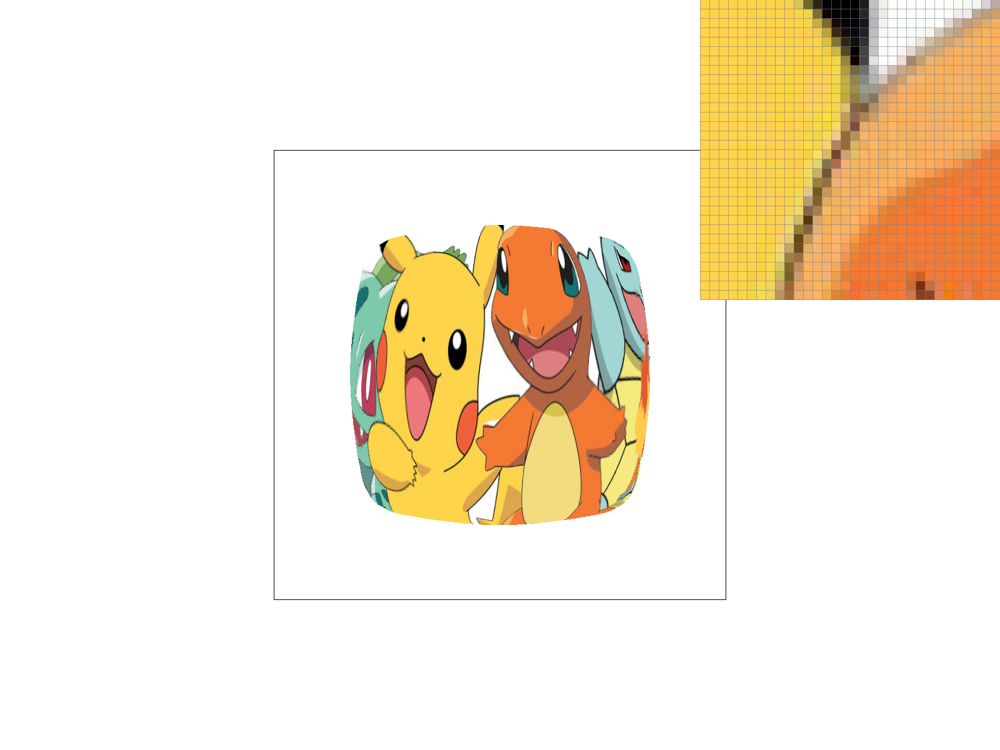

Overview
This homework starts from the basic implementation of rasterizing a triangle using the three line tests covered in class. This rasterization method yields low-quality images with a lot of jagginess, so in Task 2, I added supersampling to capture more nuances and detail in the rasterizing process to improve image quality. In Task 3, I implemented transformation matrices to allow for the translation, scaling and rotation of images. In Task 4, I implemented the computation of barycentric coordinates and applied it to color rendering within a triangle. In Task 5, I created functions to perform simple pixel sampling by taking the nearest neighbor, and a more advanced pixel sampling method through bilinear interpolation. Lastly, in Task 6, I used both Nearest D and linear interpolation methods to perform level sampling with a mipmap.
Section I: Rasterization
Part 1: Rasterizing single-color triangles
The rasterize_triangle() function takes in the x and y coordinates of the triangle's three vertices. Using these vertices, we are able to determine whether a given point on the screen falls within the triangle. To do so, I implemented a helper function called inside_triangle() which performs line equation tests for a point in question against the three edges of a triangle. In the second helper function line_equation_test(), I used the equation covered in class. If line_equation_test() returns 0, the point lies on the edge. If it returns a positive value, the point lies inside the edge. If it returns a negative value, the point lies outside the edge.
In the clockwise case, inside_triangle() returns true if all three tests return a value >= 0. In the anti-clockwise case, inside_triangle returns false if all three tests return a value <= 0. This is because when the winding order of the vertices changes, the perpendicular vector N shifts to the opposite side.
For every point, I took the floor of the x and y coordinates to get the coordinates of its corresponding grid. Then I added 0.5 to the floored values to get the center of the grid. Lastly, I conducted the inside_triangle() test for the center. If the test returns true, I fill in the pixel following the example given in rasterize_point().
My algorithm is no worse than one that checks each sample within the bounding box of the triangle. At the start of rasterize_triangle(), I found the max and min x and y coordinates within the triangle. These coordinates can be used to define the bounding box of the triangle. Then I used two for loops to iterate through points within the bounding box.
Part 2: Antialiasing triangles
For this task, I used RasterizerImp::sample_buffer() to store my supersamples data. To ensure that the sample buffer resizes following the size of the frame buffer and sampling rate, I updated RasterizerImp::set_sample_rate() and RasterizerImp::set_framebuffer_target(). In these two methods, I first computed the dimension N for supersampling by taking the square root of the sampling rate. Then I multiply the original width and height of the sampling buffer by N.
In the RasterizerImp::rasterize_triangle() function, I divided each pixel into NxN grids and computed grid_size = 1/N. Within the double for loops for iterating through the individual pixels, I added another two for loops to iterate through the NxN grids. Below is a sceenshot of the inner double for loop. The variables i and j used to compute the centers of the grids are the coordinates of their corresponding pixel, and col and row refer to the grid's position within that pixel. Next, I used the inside_triangle() function implemented in Part 1 to check if the center of these grids fall within the triangle. If so, I write their color data into the sample buffer using the fill_pixel() method.
I also modified the fill_pixel() method for index conversion to reflect the changes in sample buffer size due to supersampling.
To populate the framebuffer from the sample buffer, I modified RasterizerImp::resolve_to_framebuffer(). For each pixel, I used a double for loop to iterate through the NxN grids in the sample buffer and computed the average RGB values of these grids. The average RGB values are floats. I multiplied them by 255 before writing them into the framebuffer. The index conversion steps are shown in the screenshot below.
Lastly, to make sure that lines and points still render correctly after implementing supersamling, I modified RasterizerImp::rasterize_point to fill all the supersamples corresponding to the point or line with the same color. This is done, again, through adding a double for loop to iterate through the NxN grids while taking care of index conversion.
Why is supersampling useful? To answer this question, please first see below for the screenshots of basic/test4.svg with the default viewing parameters and sample rates 1, 4, 9, and 16. The pixel inspector is positioned over an area that showcases the effect dramatically. As the sample rate increases, the image becomes less jaggy and more evenly blurred, giving us higher image quality. This is because as we increase the sample rates, we divide each pixel into more fine-grained grids and sample them individually before computing their average. Having more small grids prevents us from over-simplifying details in an image by hastily admitting or filtering out a pixel box simply based on coordinates of its center.

|
|
|
|
|
Part 3: Transforms

In this part, after implementing the transformation functions, I updated robot.svg to make an image of the red robot doing morning stretch in its blue PJ. I changed the color of its torso, upper arms and upper legs to represent the blue PJ. For the robot's head, I rotated it by 60 degrees anticlockwise and translated it up by 10 pixels. For the left arm, I rotated it by 95 degrees anticlockwise and translated it to the left by 100 pixels. For the right arm, I rotated it by 45 degrees anticlockwise and translated it to the right by 50 pixels and up by 30 pixels. Below is a screenshot of the rendered image of my_robot.svg.
Section II: Sampling
Part 4: Barycentric coordinates
Barycentric coordinates is a way of representing a point's position within a triangle as a weighted sum of the coordinates of the three vertices. The weights are represented by coefficients alpha, beta and gamma which sum up to 1. These coefficients indicate how close the point is to the three vertices. The larger a coefficient is, the closer the point is to the coefficient's respective vertex. For example, in the screenshot below, point (x, y) is closer to vertex B than to vertex A, so beta should be greater than alpha.
Barycentric coordinates can also be used to compute an attribute at a point within a triangle relative to the attribute's values at the three vertices. For example, the screenshot below shows an example of computing the color of a point within a triangle as a weighted average of the colors at the three vertices, where the weights are alpha, beta and gamma. In this example, the point V is closer to vertices B and C, so beta and gamma are greater than alpha. As a result, the color at point V has more green and blue in it than red.
After implementing RasterizerImp::rasterize_interpolated_color_triangle for this task, I was able to get a correct rendering of test 7.
Part 5: "Pixel sampling" for texture mapping
Pixel sampling is about picking the right textel from a texture and mapping it to its corresponding pixel position on the screen. For this task, I did the following steps to implement pixel sampling:
- For every point in the sample buffer, I computed its barycentric coordinates. Using these barycentric coordinates and the triangle's corresponding vertices in the texture, I computed the point's (u, v) coordinates in the texture.
- Then I implemented two methods that use these (u, v) coordinates to decide which textel to pick.
- Nearest neighbor
- This method simply takes the textel that is closest to the (u, v) coordinates. I rounded u and v to their nearest integers and use the integers to index into the mipmap at level 0
- Bilinear sampling
- This method takes the four textels that are closest to the (u, v) coordinates and computes a weighted average of the colors at these four textels.
- To get the closet four textels, first, I took the floor values of u and v to get the indices of (u, v)'s current textel.
- Second, I divided that textel into 2 X 2 grids.
- Third, based on which grid point (u, v) falls into, I picked the four nearest textels based on the rule shown in the picture below.
- Then I computed the fractions representing (u, v)'s relative distances to the centers of the four textels. Using these fractions as weights, I computed the weighted average of the colors at these four textels and saved the result to the sample buffer. This step is called interpolation.
Below are four .png screenshots of svg/texmap/test1.svg using nearest sampling at 1 sample per pixel, nearest sampling at 16 samples per pixel, bilinear sampling at 1 sample per pixel, and bilinear sampling at 16 samples per pixel.
|
|
|
|
|
|
When the sampling rate is as low as 1 sample per pixel, nearest neighbor sampling method gives jaggy, disconnected white lines in test 1, whereas bilinear sampling renders blurred white lines with better continuity. This is because while nearest neighbor simply takes a discrete block of textel, the interpolation step in bilinear sampling resulted in a smoother boundary between pixels through the computation of weighted average values.
However, when the sampling rate increases to 16 sample per pixel, the two sampling methods render similar results. This is because even for nearest neighbor sampling, supersampling does a good job in breaking down a single pixel into smaller blocks and taking their average color. The averaging down step in supersampling has a similar effect to the interpolation step in bilinear sampling. Therefore, it is reasonable to say that when the sampling rate is high, there will not be a large difference between the two methods.
Part 6: "Level sampling" with mipmaps for texture mapping
A mipmap consists of multiple versions of a texture with different levels of resolution. The higher the level is, the lower the resolution. When we map part of a texture onto the screen space, sometimes we want to use a texture of lower resolution to reduce jagginess. For example, when we want to squeeze a large piece of texture into a small area on the screen, we would rather have a smoother display with less detail than a very jaggy display with distorted detail. In level sampling, we use level sampling to compute the optimal mipmap level, take the pre-sampled-down version of the texture on that mipmap level, and map textels from that version onto the screen.
To implement level sampling in this task, I did the following steps.
- For each point (x, y) in the sample buffer, I computed its corresponding (u, v) coordinates in the texture space using barycentric coordinates.
- Using the same method, I computed the (u, v) coordinates of (x + 1, y) and (x, y + 1) as well.
- Using Pythagoras' theorem, I computed (x, y)'s distances to (x + 1, y) and (x, y + 1) in the (u, v) coordinate system. These distances are also called the screen pixel's footprint in the texture.
- I picked the larger value between the two distances and name it L. Then I computed the mipmap level D by taking the log2 of L.
- When lsm == L_NEAREST, I simply rounded D to its nearest integer and use the number to index into the mipmap.
- When lsm == L_LINEAR, I took the floor and ceiling of D and use the two integer values to index into the mipmap. I sampled one textel from each of these two layers of mipmap. Then I used bilinear interpolation to get a weighted average of these two values.
Describe the tradeoffs between speed, memory usage, and antialiasing power between the pixel sampling, level sampling, or the number of samples per pixel.
- Nearest neighbor and bilinear pixel sampling methods do not need pre-computed mipmaps for level sampling, which would otherwise require extra storage space, so they use less memory compared to level sampling.
- However, as nearest neighbor and bilinear pixel sampling compute textel values on the fly, they may be slower compared to level sampling.
- Level sampling seems to have the stronger antialiasing power than pixel sampling. Even though bilinear sampling also smooths out pixel transitions by computing averages, it follows the same rule across the screen space. In contrast, Level sampling changes texture resolutions in different areas of the screen based on a pixel's footprint in the texture, leading to higher image quality.
- When we raise the sampling rate in supersampling, we use more memory because we have to make our sample buffer bigger to hold the extra NxN values within each pixel. Supersampling also makes things slower because we have to do more line tests and calculations to average things out. But the antialiasing effect gets better with supersampling as we increase the sampling rate because with higher granularity, it captures more details and nuances in the pixel selection process.
I used this .png file to show four versions of the image mapped onto test1.svg, using the combinations of L_ZERO and P_NEAREST, L_ZERO and P_LINEAR, L_NEAREST and P_NEAREST, as well as L_NEAREST and P_LINEAR.

Here are the screenshots.
|
|
|
|
|

|